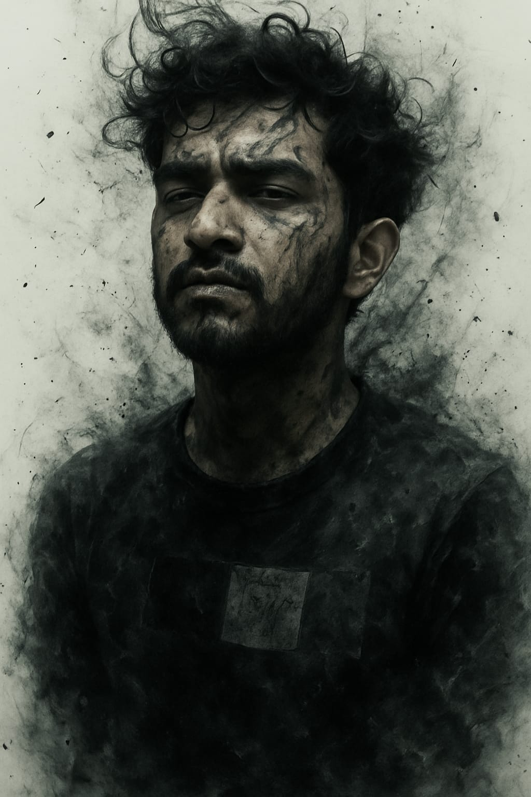

Nitin Kumar
MCA Student & Aspiring Cybersecurity Expert
Motivated and detail-oriented MCA student passionate about technology and cybersecurity.
About Me
Masters in Computer Application (2023-2025) - TULA'S INSTITUTE, Uttarakhand
Bachelor of Computer Application (2020-2023) - RAMA INSTITUTE, Uttar Pradesh
Based in Kiratpur, Bijnor, Uttar Pradesh, India
Download My Resume (PDF)